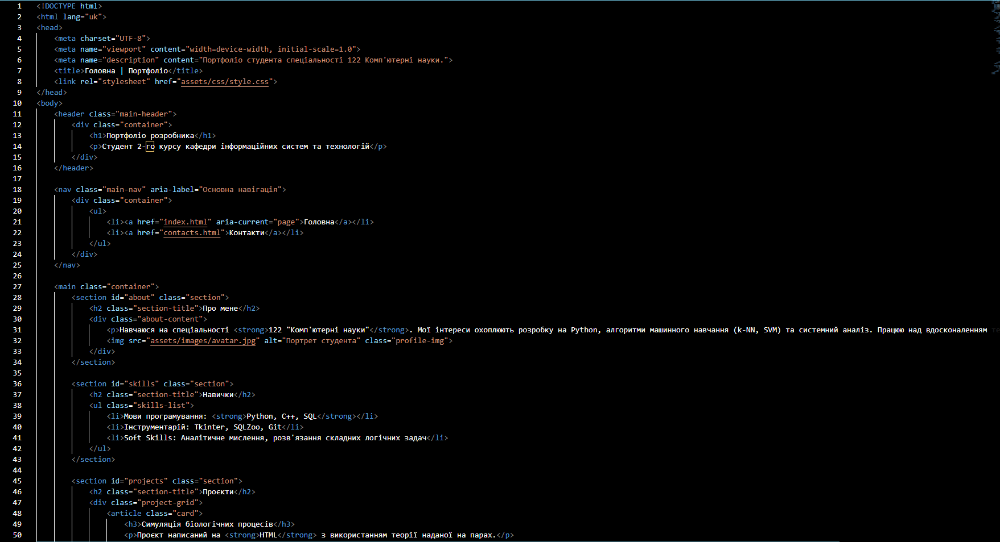

Виконання лабораторної роботи
Проєкт написаний на HTML з використанням теорії наданої на парах.

Переглянути кодСтудент 2-го курсу кафедри інформаційних систем та технологій
Навчаюся на спеціальності 122 "Комп'ютерні науки". Мої інтереси охоплюють розробку на Python, алгоритми машинного навчання (k-NN, SVM) та системний аналіз. Працюю над вдосконаленням технічних навичок у SQL та C++.
Проєкт написаний на HTML з використанням теорії наданої на парах.

Переглянути код